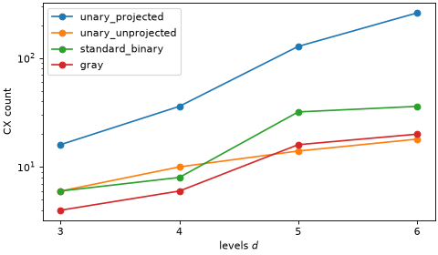

Map operator representations¶
A mapper turns a BosonOperator into a qubit operator, here a
SparseObservable. The operator itself knows nothing about qubits: it
stores ladder operators on modes, and a bosonic mode holds arbitrarily many particles. Everything
that makes the operator finite (how many occupation levels you keep, and how those levels are laid
out on qubits) is decided when you map it.
The library mapper occupation_encoding() works in the
occupation (Fock) basis: level \(n\) of a mode is the state with \(n\) bosons. It takes the
operator and a LevelSpec, which holds the truncation and the
encoding. This guide explains what those two choices mean and what each one costs. For an end-to-end
route that uses them, see Simulate Bose-Hubbard dynamics with a choice of encoding; for how the transpiler applies the
same choices to a whole circuit, see Transpile bosonic circuits.
Truncate the Fock space¶
A mode that is kept to \(d = n_\text{max} + 1\) levels, where \(n_\text{max}\) is its
max_occupation, no longer obeys the canonical commutation relation. Writing \(\bar{b}\) for
the annihilation operator truncated to those levels,
so the relation holds on every level except the highest [1]. You can see this by mapping the commutator of the two ladder operators and reading its diagonal on the levels of one mode. The following helper builds the dense matrix of a mapped operator for a single mode, which is only reasonable for very small registers:
>>> import numpy as np
>>> from qiskit.quantum_info import SparsePauliOp
>>> from qiskit_bosons.mappers import LevelEncoding, LevelSpec
>>> from qiskit_bosons.mappers.library import occupation_encoding
>>> from qiskit_bosons.operators import BosonOperator, ann, cre
>>>
>>> def level_diagonal(operator, max_occupation, encoding):
... """The diagonal of a mapped one-mode operator on the codewords of the levels."""
... spec = LevelSpec(max_occupation, encoding)
... matrix = SparsePauliOp.from_sparse_observable(occupation_encoding(operator, spec)).to_matrix()
... codewords = [spec.encoding.level_to_bits(level) for level in range(max_occupation + 1)]
... return [round(float(matrix[c, c].real), 6) for c in codewords]
>>>
>>> b = BosonOperator.from_dict({(ann(0),): 1.0})
>>> b_dagger = BosonOperator.from_dict({(cre(0),): 1.0})
>>> commutator = (b @ b_dagger) - (b_dagger @ b)
>>> level_diagonal(commutator, 2, "unary_unprojected") # d = 3
[1.0, 1.0, -2.0]
The last entry is \(1 - d\). Because this means the span of \(\{\bar{b}^\dagger, \bar{b}\}\) is not closed under the commutator, no encoding is an isomorphism of algebras. An encoding maps states, together with the operators that act within the truncated subspace. The following two consequences matter in practice.
The cutoff must bound the reachable occupation. It is not enough to bound the occupation you start with. A beamsplitter acting on \(\lvert 1, 1 \rangle\) populates \(\lvert 2, 0 \rangle\) and \(\lvert 0, 2 \rangle\), so a cutoff of one silently produces a wrong state:
>>> from scipy.linalg import expm
>>>
>>> beamsplitter = BosonOperator.from_dict({(cre(0), ann(1)): 1.0, (cre(1), ann(0)): 1.0})
>>>
>>> def stays_in_11(max_occupation):
... """Probability to remain in |1, 1> after a 50:50 beamsplitter."""
... spec = LevelSpec(max_occupation, "gray").resolve(2)
... observable = occupation_encoding(beamsplitter, spec, spec.total_width)
... matrix = SparsePauliOp.from_sparse_observable(observable).to_matrix()
... unitary = expm(-1j * (np.pi / 4) * matrix)
... index = sum(spec.encoding.level_to_bits(1) << offset for offset in spec.offsets)
... return round(float(abs(unitary[index, index]) ** 2), 6)
>>>
>>> stays_in_11(1), stays_in_11(2)
(1.0, 0.0)
With a cutoff of one, the probability of staying in \(\lvert 1, 1 \rangle\) is one, because the
two states that the dynamics would populate do not exist. With a cutoff of two, it vanishes, which is
the Hong-Ou-Mandel effect. This is why max_occupation is a required argument that never has a
default: it is a modeling decision and a convergence parameter that you are expected to sweep.
Mapping does not commute with normal ordering. The operators \(b b^\dagger\) and \(b^\dagger b + 1\) are equal before truncation, but they map to different qubit operators:
>>> product = BosonOperator.from_dict({(ann(0), cre(0)): 1.0})
>>> ordered = BosonOperator.from_dict({(cre(0), ann(0)): 1.0}) + BosonOperator.one()
>>> bool(product.equiv(ordered))
True
>>> level_diagonal(product, 3, "unary_unprojected") # d = 4
[1.0, 2.0, 3.0, 0.0]
>>> level_diagonal(ordered, 3, "unary_unprojected")
[1.0, 2.0, 3.0, 4.0]
The two agree on every level but the highest. Applied to the top level, \(b^\dagger\) has nowhere to go and the amplitude is clipped, so \(b b^\dagger\) is zero there, whereas \(b^\dagger b + 1\) gives \(d\). Decide once whether your Hamiltonian is defined in normal-ordered form, and map that form consistently.
Three methods help you choose a cutoff, and all of them are lower bounds. The operator reports the largest number of creation operators that it applies to each mode within a single term, and a spec compares that with its cutoffs:
>>> quartic = BosonOperator.from_dict({(cre(0), cre(0), ann(0), ann(0)): 1.0})
>>> quartic.mode_occupations(), quartic.max_occupation()
([2], 2)
>>> LevelSpec(1, "gray").truncation(quartic) # one level short
[1]
>>> LevelSpec(2, "gray").truncation(quartic)
[0]
A non-zero entry means the cutoff is below the bound, and the value is how far. These helpers do not know about the dynamics, so a passing check does not make a cutoff sufficient; the beamsplitter above has a bound of one yet needs a cutoff of two. They can also report a shortfall for a term that is zero on the retained levels, as \(b^\dagger b^\dagger b b\) is for a cutoff of one.
Describe the truncation with a LevelSpec¶
A LevelSpec bundles the cutoff of every mode with the encoding, and
it derives from them how many qubits each mode occupies and where its qubits start. Everything that
has to agree about that (the mapper, the transpiler layout, the state preparation) is given the same
spec. The encoding is a required argument, and so is the cutoff: neither has a default.
The cutoff is either one integer, shared by all modes, or one integer per mode:
>>> shared = LevelSpec(2, "gray")
>>> per_mode = LevelSpec([4, 2, 2], "gray")
>>> shared.num_modes is None, per_mode.num_modes
(True, 3)
A spec built from a single integer leaves the number of modes open, so you have to resolve it before asking for widths. A sequence is never broadcast, whatever its length, and it fixes the number of modes:
>>> per_mode.widths, per_mode.offsets, per_mode.total_width
([3, 2, 2], [0, 3, 5], 7)
>>> shared.resolve(3).widths
[2, 2, 2]
>>> try:
... shared.widths
... except ValueError as error:
... print(error)
this spec was built from a single cutoff, so its number of modes is open; call `resolve(num_modes)` first
Mode \(m\) occupies the qubits offsets[m] to offsets[m] + widths[m] - 1, so modes with
different cutoffs can take different numbers of qubits, and the offsets are the running sum of the
widths. You do not need to pass the number of modes to the mapper. It takes it from the spec, or,
for a spec with a single cutoff, from the operator through
min_num_modes(). The register can be wider than the
modes need; the surplus qubits are idle and sit at the end:
>>> number = BosonOperator.from_dict({(cre(0), ann(0)): 1.0})
>>> number.min_num_modes()
1
>>> occupation_encoding(number, LevelSpec(1, "gray")).num_qubits
1
>>> occupation_encoding(number, LevelSpec(1, "gray"), 4).num_qubits
4
An operator that acts on a mode beyond the last one of a per-mode spec is refused:
>>> far = BosonOperator.from_dict({(cre(5), ann(5)): 1.0})
>>> try:
... occupation_encoding(far, LevelSpec([1, 1], "gray"))
... except ValueError as error:
... print(error)
the operator acts on 6 modes, but the spec covers only 2
A few limits follow from how the encodings count qubits. Under a compact encoding, a mode with a
single level (max_occupation = 0) takes no qubit at all, because its one level needs nothing to
be told apart from another. Such a mode is allowed and does not move the qubits of the modes after
it, but a spec in which every mode would take no qubit is rejected. The unary encodings hold at most
128 levels per mode, and a larger cutoff raises an error that suggests a compact encoding:
>>> LevelSpec([0, 1], "gray").resolve(2).widths
[0, 1]
>>> try:
... LevelSpec(0, "gray")
... except ValueError as error:
... print(str(error).split(":")[0])
the spec would span no qubits
>>> try:
... LevelSpec(128, "unary_projected")
... except ValueError as error:
... print(str(error).split(" (")[0])
max_occupation = 128 is too large for the unary encodings, which hold at most 128 levels per mode
Choose an encoding¶
A LevelEncoding decides which basis state of a block of qubits
represents each level. There are four, and no one of them is best in general [2]. The number of
qubits per mode and the bit pattern of each level follow from the encoding:
>>> encodings = (
... LevelEncoding.UNARY_PROJECTED,
... LevelEncoding.UNARY_UNPROJECTED,
... LevelEncoding.STANDARD_BINARY,
... LevelEncoding.GRAY,
... )
>>> rows = ["encoding qubits for d = 1, 2, 3, 4, 5, 8 level 0 to 4 as bit patterns"]
>>> for encoding in encodings:
... widths = [encoding.num_qubits(levels) for levels in (1, 2, 3, 4, 5, 8)]
... patterns = [f"{encoding.level_to_bits(level):05b}" for level in range(5)]
... rows.append(f"{encoding!s:18s} {widths!s:34s} {patterns}")
>>> print("\n".join(rows))
encoding qubits for d = 1, 2, 3, 4, 5, 8 level 0 to 4 as bit patterns
unary_projected [1, 2, 3, 4, 5, 8] ['00001', '00010', '00100', '01000', '10000']
unary_unprojected [1, 2, 3, 4, 5, 8] ['00001', '00010', '00100', '01000', '10000']
standard_binary [0, 1, 2, 2, 3, 3] ['00000', '00001', '00010', '00011', '00100']
gray [0, 1, 2, 2, 3, 3] ['00000', '00001', '00011', '00010', '00110']
The bit patterns are integers in which bit \(q\) is the value of qubit \(q\). The unary encodings spend one qubit per level and set one of them. The compact encodings spend \(\lceil \log_2 d \rceil\) qubits and store the level number, in binary or as a Gray code in which neighboring levels differ in one bit. The string name of an encoding is accepted wherever the encoding is.
The trade-off is qubits against operator weight. The compact encodings need exponentially fewer qubits, but a ladder operator connects levels whose patterns can differ in several bits, so its terms act on more qubits. The following sections look at what this costs, starting with the two unary encodings, which have identical layouts and differ only in the operator.
Compare the two unary encodings¶
In the unary encoding a ladder operator moves one excitation between two neighboring qubits. To write that as an operator on the whole mode, you must choose what to do with the other qubits. The two variants choose differently:
unary_projectedputs a projector \(\lvert 0 \rangle\langle 0 \rvert\) on every other qubit of the mode. That enforces the one-hot constraint in the operator itself: the term acts only if the rest of the mode is empty.unary_unprojectedleaves those qubits alone, so the term acts as the identity on them.
Look at a single \(b^\dagger\) at \(d = 4\) under both. The mapper returns a
SparseObservable, whose terms are strings of single-qubit bit terms.
Here are the first four terms of each, with the qubits they act on:
>>> for encoding in ("unary_projected", "unary_unprojected"):
... observable = occupation_encoding(b_dagger, LevelSpec(3, encoding))
... terms = observable.to_sparse_list()
... print(encoding, "->", len(terms), "terms on", observable.num_qubits, "qubits")
... for label, qubits, coefficient in terms[:4]:
... print(f" {label:5s} on qubits {qubits} coefficient {complex(coefficient):.4f}")
unary_projected -> 12 terms on 4 qubits
XX00 on qubits [0, 1, 2, 3] coefficient 0.2500+0.0000j
XY00 on qubits [0, 1, 2, 3] coefficient 0.0000-0.2500j
YX00 on qubits [0, 1, 2, 3] coefficient 0.0000+0.2500j
YY00 on qubits [0, 1, 2, 3] coefficient 0.2500+0.0000j
unary_unprojected -> 12 terms on 4 qubits
XX on qubits [0, 1] coefficient 0.2500+0.0000j
XY on qubits [0, 1] coefficient 0.0000-0.2500j
YX on qubits [0, 1] coefficient 0.0000+0.2500j
YY on qubits [0, 1] coefficient 0.2500+0.0000j
Both have twelve terms with the same coefficients. The projected terms carry a 0 bit term on
the two qubits that the unprojected terms do not mention, so each projected term touches all four
qubits and each unprojected term touches two. In general a projected term touches all \(d\)
qubits of the mode, because it carries two factors, each \(X\) or \(Y\), and a projector on
each other qubit.
The two operators are equal on the states that the encoding is meant for, the one-hot basis states (the codewords), and differ outside them. To check, take a small operator on two modes at \(d = 3\) and compare the matrices on the nine codewords:
>>> hamiltonian = BosonOperator.from_dict({
... (cre(0), ann(1)): 1.0, (cre(1), ann(0)): 1.0,
... (cre(0), ann(0)): 0.5, (cre(1), cre(1), ann(1), ann(1)): 0.25,
... })
>>> matrices = {}
>>> for encoding in ("unary_projected", "unary_unprojected"):
... observable = occupation_encoding(hamiltonian, LevelSpec(2, encoding))
... matrices[encoding] = SparsePauliOp.from_sparse_observable(observable).to_matrix()
>>> unary = LevelEncoding.UNARY_PROJECTED
>>> codewords = sorted(
... unary.level_to_bits(first) | (unary.level_to_bits(second) << 3)
... for first in range(3) for second in range(3)
... )
>>> projected, unprojected = matrices["unary_projected"], matrices["unary_unprojected"]
>>> bool(np.allclose(projected[np.ix_(codewords, codewords)], unprojected[np.ix_(codewords, codewords)]))
True
>>> bool(np.allclose(projected, unprojected))
False
Both also leave the codeword subspace invariant, so a state prepared on a codeword stays on codewords. The choice matters only for states that leave that subspace, for example through noise. There the projected operator suppresses the evolution, because its projectors fail, whereas the unprojected one keeps acting. Neither behavior is a physical requirement. The unprojected operator is only defined on the one-hot subspace, so choosing it is a modeling decision and not a free optimization.
What the projectors cost is gates. Evolve a Hermitian \(b^\dagger + b\) on one mode for a short time, and count the two-qubit gates after Qiskit’s transpilation:
>>> from qiskit import QuantumCircuit, transpile
>>> from qiskit.circuit.library import PauliEvolutionGate
>>>
>>> def cx_count(observable):
... circuit = QuantumCircuit(observable.num_qubits)
... circuit.append(PauliEvolutionGate(observable, time=0.1), range(observable.num_qubits))
... basis = ["cx", "rz", "sx", "x"]
... return transpile(circuit, basis_gates=basis, optimization_level=1).count_ops().get("cx", 0)
>>>
>>> hermitian = b + b_dagger
>>> levels = (3, 4, 5, 6)
>>> counts = {
... str(encoding): [
... cx_count(occupation_encoding(hermitian, LevelSpec(d - 1, encoding))) for d in levels
... ]
... for encoding in encodings
... }
The exact counts depend on how Qiskit synthesizes the evolution gate, which changes between releases, so plot them:



The unprojected count grows linearly with \(d\), because each of the \(d - 1\) transitions is a two-qubit rotation. The projected count grows much faster, because every term acts on all \(d\) qubits. The compact encodings need fewer qubits, but the weight of their terms depends on how the bit patterns of neighboring levels differ: the Gray code, in which they differ in one bit, is the cheaper of the two compact encodings, and standard binary jumps when a carry flips several bits at once (\(d = 5\)). Whether a compact encoding also beats the unprojected unary one depends on \(d\) and on how Qiskit synthesizes the evolution, so read the trend and not the ranking at one size.
The projectors also matter when you expand a mapped operator into Paulis, which
from_sparse_observable() does by replacing each projector
with a sum of two Pauli operators. A term with \(k\) projectors becomes \(2^k\) Pauli terms.
Here is a single \(b^\dagger\) at small \(d\), which is the only size at which you should
try this:
>>> rows = [f"{'d':>2s} {'stored (both)':>14s} {'expanded, projected':>20s} {'expanded, unprojected':>22s}"]
>>> for levels in (3, 4, 5):
... stored = len(occupation_encoding(b_dagger, LevelSpec(levels - 1, "unary_projected")))
... expanded = [
... len(SparsePauliOp.from_sparse_observable(
... occupation_encoding(b_dagger, LevelSpec(levels - 1, encoding))).simplify())
... for encoding in ("unary_projected", "unary_unprojected")
... ]
... rows.append(f"{levels:2d} {stored:14d} {expanded[0]:20d} {expanded[1]:22d}")
>>> print("\n".join(rows))
d stored (both) expanded, projected expanded, unprojected
3 8 16 8
4 12 48 12
5 16 128 16
Both variants store the same number of terms, but the expansion of the projected one grows
exponentially in \(d\). For anything larger than a toy example, read the terms of the
SparseObservable directly, as the listing above does, instead of
converting it.
The compact encodings cannot drop their projectors. There the zero bits are part of the level number, so removing a \(\lvert 0 \rangle\langle 0 \rvert\) changes which levels a term connects, and the operator is no longer the same on the codewords. This is why only the unary encoding comes in two variants.
A product of ladders is truncated first¶
One more design choice shows up in the cost of diagonal terms. The mapper does not map each ladder operator and multiply the results. It collects the ladder operators that a term applies to one mode, multiplies them as a \(d \times d\) matrix in the Fock basis, truncates that product once, and encodes the result [2]. A product such as the number operator \(b^\dagger b\) therefore stays diagonal:
>>> number_observable = occupation_encoding(number, LevelSpec(3, "unary_unprojected"))
>>> [(label, qubits) for label, qubits, _ in number_observable.to_sparse_list()]
[('1', [1]), ('1', [2]), ('1', [3])]
>>> cx_count(number_observable)
0
Its terms are the projectors \(\lvert 1 \rangle\langle 1 \rvert\) on the qubit of each level above zero, weighted by the level number (level zero has weight zero and so has no term). A time evolution of it is a set of single-qubit rotations and needs no two-qubit gate. Multiplying the two mapped ladder operators instead gives the same operator on the codewords, but a different one outside them, with off-diagonal strings that cost gates:
>>> unprojected = LevelSpec(3, "unary_unprojected")
>>> as_pauli = lambda operator: SparsePauliOp.from_sparse_observable(
... occupation_encoding(operator, unprojected, 4)).simplify()
>>> composed = as_pauli(b_dagger).dot(as_pauli(b)).simplify()
>>> direct = as_pauli(number)
>>> len(direct), len(composed)
(4, 16)
>>> cx_count(direct)
0
>>> bool(cx_count(composed) > 0)
True
>>> codewords = [LevelEncoding.UNARY_UNPROJECTED.level_to_bits(level) for level in range(4)]
>>> bool(np.allclose(direct.to_matrix()[np.ix_(codewords, codewords)],
... composed.to_matrix()[np.ix_(codewords, codewords)]))
True
>>> bool(np.allclose(direct.to_matrix(), composed.to_matrix()))
False
Diagonal terms such as the on-site interaction of the Bose-Hubbard model are these products, which is where this choice matters.
Write a custom mapper¶
If you want an encoding that the library does not provide, build it from the image of a single
ladder operator. map_boson_action_generators() takes a function that
maps one BosonAction, a function that returns the
identity, and builds the mapper of whole operators from them. It multiplies the images of the
actions of each term in order, scales by the coefficient, and sums the terms. The output can be
any type that supports scalar multiplication and composition.
As an example, take the encoding for \(d = 2\) that stores a mode in one qubit. A creation operator is \(\lvert 1 \rangle\langle 0 \rvert\), which is \((X - iY)/2\) in Qiskit’s convention, and an annihilation operator is its adjoint:
>>> from qiskit_bosons.mappers import map_boson_action_generators
>>> from qiskit_bosons.operators import BosonAction
>>>
>>> num_qubits = 2
>>>
>>> def map_action(action: BosonAction) -> SparsePauliOp:
... is_creation, mode = action
... sign = -1j if is_creation else 1j
... return SparsePauliOp.from_sparse_list(
... [("X", [mode], 0.5), ("Y", [mode], 0.5 * sign)], num_qubits=num_qubits
... )
>>>
>>> def identity() -> SparsePauliOp:
... return SparsePauliOp.from_sparse_list([("", [], 1.0)], num_qubits)
>>>
>>> model = BosonOperator.from_dict({
... (cre(0), ann(1)): -1.0, (cre(1), ann(0)): -1.0, (ann(0), cre(0)): 0.7, (cre(1), ann(1)): 0.3,
... })
>>> custom = map_boson_action_generators(model, map_action, identity)
>>> library = SparsePauliOp.from_sparse_observable(occupation_encoding(model, LevelSpec(1, "gray")))
>>> bool(np.allclose(custom.to_matrix(), library.to_matrix()))
True
This hand-written mapper multiplies the mapped ladder operators, and it agrees with the library mapper here because every mode has two levels and a qubit holds the whole mode. At larger \(d\), as the previous section showed, composing the mapped ladders and truncating the product first are not the same operator outside the codewords.
To use such a mapper in a circuit, wrap it in a function with the signature
(operator, num_qubits) -> SparseObservable and hand it to
MapperFnEvolutionSynthesis, which maps the operator of
every
Evolution gate with it. The transpiler pipeline is described
in Transpile bosonic circuits.
>>> from qiskit.quantum_info import SparseObservable
>>> from qiskit_bosons.transpiler.passes import MapperFnEvolutionSynthesis
>>>
>>> def mapper_fn(operator, num_qubits):
... return SparseObservable.from_sparse_pauli_op(
... map_boson_action_generators(operator, map_action, identity)
... )
>>>
>>> synthesis = MapperFnEvolutionSynthesis(mapper_fn)
Two details are worth knowing. First, the qubit operator must have real coefficients, because
PauliEvolutionGate rejects an imaginary part. A Hermitian operator
maps to a real one, but only once the terms that cancel have been merged. This hand-written mapper
does not merge them, so a hopping term and its adjoint leave imaginary coefficients behind until
you simplify the result. The library mapper merges its own result; a custom one has to do it, for
example by wrapping it in simplify():
>>> hopping = BosonOperator.from_dict({(cre(0), ann(1)): 1.0})
>>> hermitian_hopping = hopping + hopping.adjoint()
>>> raw = mapper_fn(hermitian_hopping, 2)
>>> bool(np.allclose(np.asarray(raw.coeffs).imag, 0))
False
>>> merged = raw.simplify()
>>> bool(np.allclose(np.asarray(merged.coeffs).imag, 0))
True
>>> sorted(label for label, _, _ in merged.to_sparse_list())
['XX', 'YY']
Second, a product formula synthesizes the terms in the order it receives them, and the order a
mapper produces is not guaranteed to be stable. The helpers
simplify()
and group_wise() wrap a mapper function to control it:
simplify merges duplicate strings and sorts the terms into a canonical order, whereas
group_wise maps one group of the operator at a time so that the terms of a group stay adjacent.
Do not combine the two, because sorting discards the grouping. The grouping guide shows how to assign groups, and the synthesis guide shows how the order affects the circuit.
Next steps¶
Follow Simulate Bose-Hubbard dynamics with a choice of encoding for a full simulation that sweeps the cutoff and compares the encodings against exact dynamics.
See Transpile bosonic circuits for how the same
LevelSpecis applied to a bosonic circuit.Read Design principles of operator representations for how a
BosonOperatorstores and orders its terms, including the contraction rule behind the normal-ordering example above.Read Rotate bosonic modes for the gate that moves bosons between modes, which is where the reachable-occupation warning matters most.
Consult the API reference of
qiskit_bosons.mappersandqiskit_bosons.mappers.library.